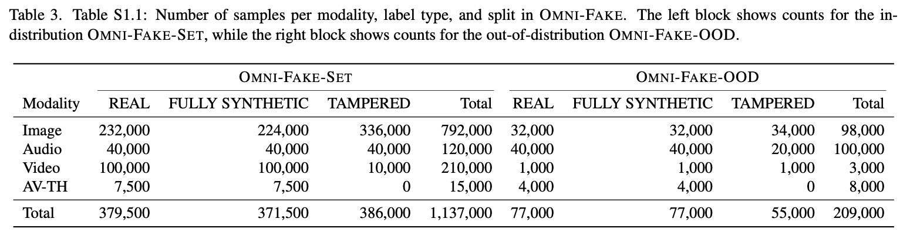

(Omni-Fake-Set)
(Omni-Fake-OOD)
Image / Audio / Video / AV-TH
Detection + Localization + Explanation
Abstract
Multimodal Deepfakes proliferating on social media threaten authenticity, information integrity, and digital forensics. Existing benchmarks are constrained by their single-modality scope, simplified manipulations, or unrealistic distributions, which limit their ability to assess real-world robustness. To address these limitations, we present Omni-Fake, a unified omni-dataset for comprehensive multimodal deepfake detection in social-media settings. It comprises Omni-Fake-Set, a large-scale, high-quality dataset with 1M+ samples, and Omni-Fake-OOD, an out-of-distribution benchmark with 100k+ samples intentionally excluded from training to evaluate generalization. Omni-Fake spans four modalities (image, audio, video, and audio-video talking head) and supports a joint detection–localization–explanation protocol.
On top of Omni-Fake, we further propose Omni-Fake-R1, a reinforcement-learning-driven multimodal detector that adaptively integrates visual and auditory cues and outputs structured decisions, localization, and natural-language explanations. Extensive experiments show significant gains in detection accuracy, cross-modal generalization, and explainability over state-of-the-art baselines.
Four Modalities, One Unified Framework

Image
Face swap, inpainting, generation, and tampered image detection with pixel-level localization
Audio
Speech synthesis, voice cloning, and audio deepfake detection with temporal interval localization
Video
Face reenactment, video generation, and manipulation detection with frame-level analysis
Audio-Video TH
Talking head forgery with cross-modal audio-visual consistency verification
Key Contributions
- Omni-Fake-Set — A large-scale, high-quality unified dataset with 1M+ samples spanning four modalities (image, audio, video, AV talking head), collected from diverse real-world social media sources with modern generators.
- Omni-Fake-OOD — An out-of-distribution benchmark with 100K+ samples, intentionally excluded from training, to rigorously evaluate cross-generator and cross-modality generalization.
- Joint Detection–Localization–Explanation Protocol — A unified evaluation framework that goes beyond binary classification to include fine-grained localization (pixel masks / temporal intervals) and natural-language explanations for trustworthy forensic analysis.
- Omni-Fake-R1 — A reinforcement-learning-driven multimodal detector built on a unified omni MLLM that adaptively integrates visual and auditory cues and outputs structured decisions, localization, and explanations.
Omni-Fake Dataset Overview

Dataset Comparison with Existing Benchmarks
Omni-Fake provides comprehensive coverage that existing benchmarks lack.
| Benchmark | Image | Audio | Video | AV-TH | Localization | Explanation | OOD Eval | Scale |
|---|---|---|---|---|---|---|---|---|
| FaceForensics++ | ✗ | ✗ | ✓ | ✗ | ✗ | ✗ | ✗ | ~1M frames |
| CnnSpot | ✓ | ✗ | ✗ | ✗ | ✗ | ✗ | ✗ | ~360K |
| SIDA | ✓ | ✗ | ✗ | ✗ | ✓ | ✗ | ✗ | ~1M |
| FakeSound | ✗ | ✓ | ✗ | ✗ | ✗ | ✗ | ✗ | ~200K |
| Omni-Fake (Ours) | ✓ | ✓ | ✓ | ✓ | ✓ | ✓ | ✓ | 1M+ / 100K+ |
Omni-Fake-R1: RL-Driven Multimodal Detector

Omni-Fake-R1 is built on a unified omni MLLM backbone and employs reinforcement learning to adaptively integrate visual and auditory cues. The model outputs three structured components:
Experimental Results
Omni-Fake-R1 shows significant gains in detection accuracy, cross-modal generalization, and explainability.

Image modality detection and localization results.

Audio modality detection results.

Video modality detection results.

Audio-Video Talking Head and OOD generalization results.
Qualitative Results
Omni-Fake-R1 produces detection, localization, and natural-language explanations across all modalities.

BibTeX
@article{li2025omnifake,
title={Omni-Fake: Benchmarking Unified Multimodal Social Media Deepfake Detection},
author={Li, Tianxiao and Huang, Zhenglin and Wen, Haiquan and He, Yiwei and Li, Xinze and Zhu, Bingyu and Duan, Wuhui and Chen, Congang and Fu, Zeyu and Dong, Yi and Wu, Baoyuan and Cheng, Guangliang},
journal={arXiv preprint arXiv:XXXX.XXXXX},
year={2025}
}